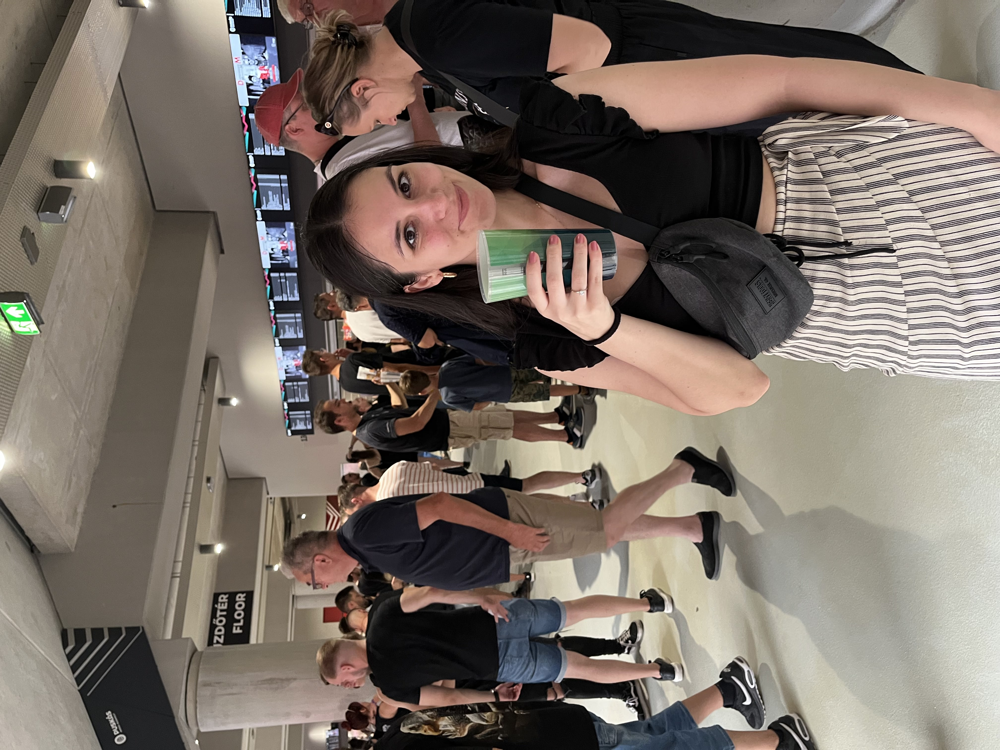
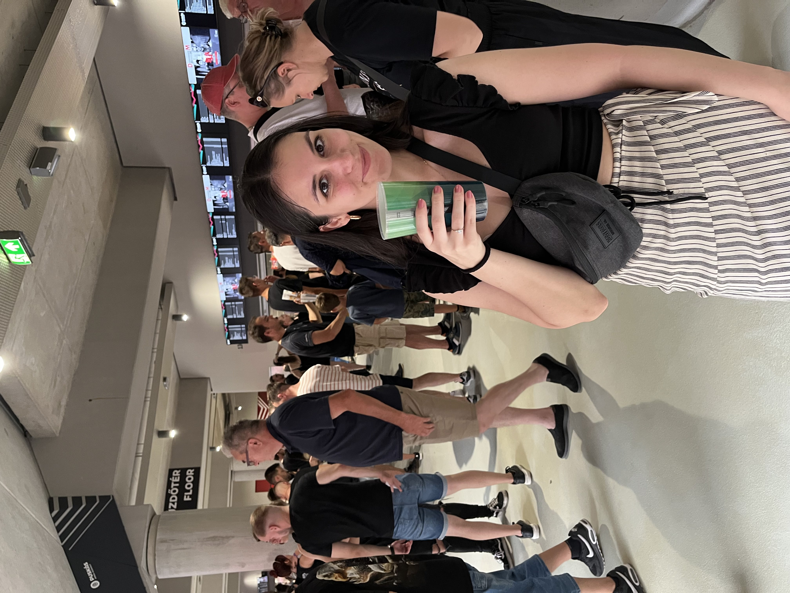
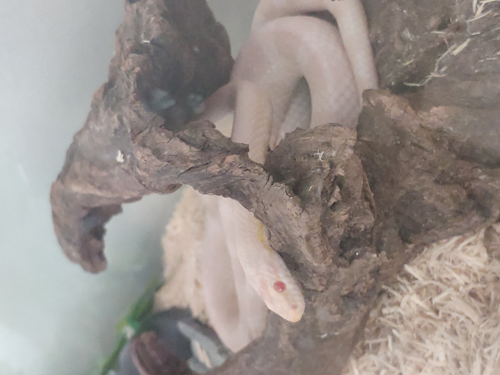
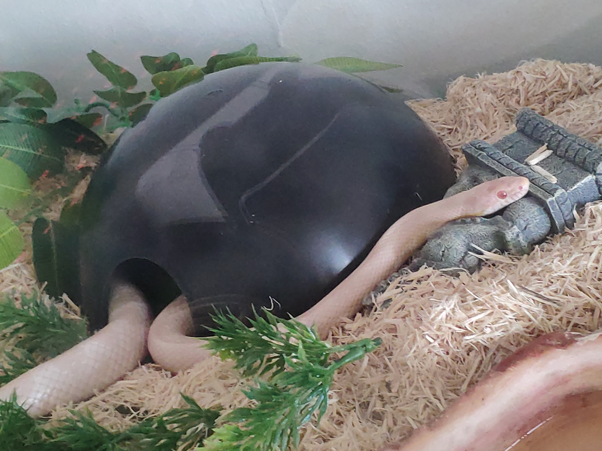
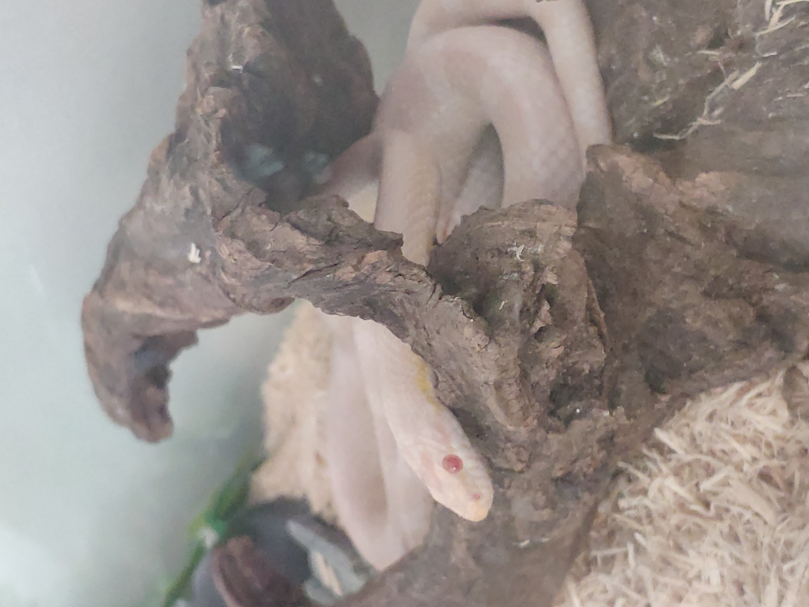
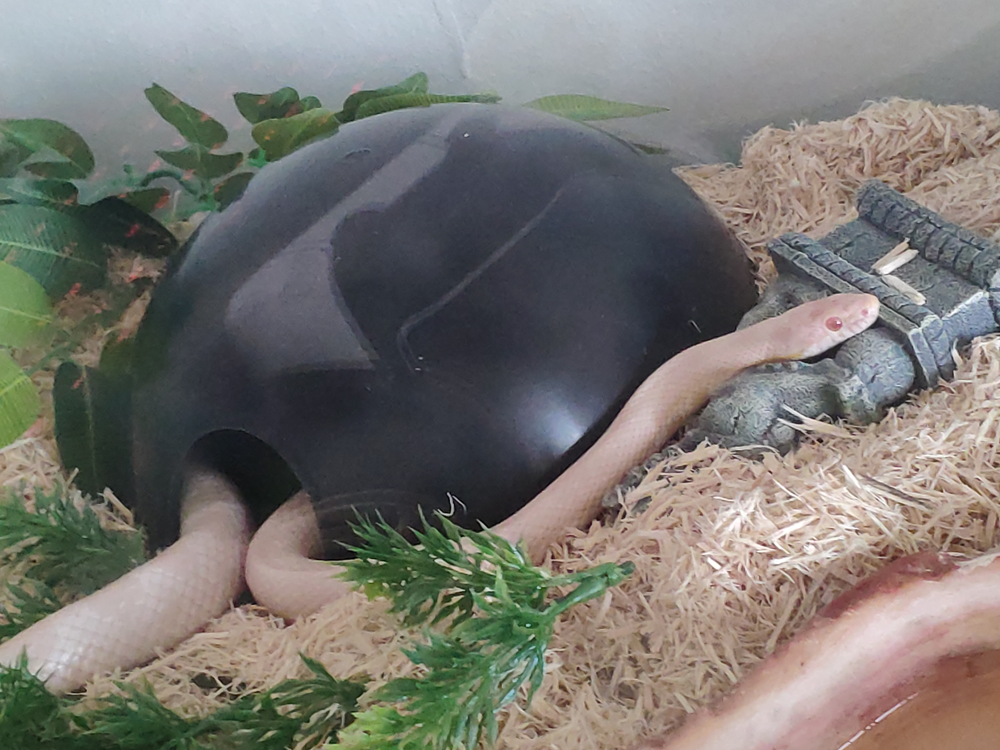

A cira és a medve kapcsolata
Mint azt korábban említettük vannak olyan speciális medvék akik képesek a cirákkal tökéletes kapcsolatokat létrehozni. Ritka mértékű szimbiózisban tud élni együtt ez a 2 különleges lény, olyannyira, hogy a társadalomnak kívülről nézve felfoghatatlan, hogy lehetnek ennyire jók egymáshoz.
Pedig ebben a medvének és a cirának rengetek munkája van, amit nem is sejthet senki. De minden nehézségen együtt át tudnak jutni és nappról nappra jobbak lesznek egymáshoz és mindenki máshoz a világban. Pont ezért mert ennyire összeillik a medve és a cira nehezen tudják elviselni a távolságot egymástól és szívesebben lennének egybeolvadva egy örökkévalóságig otthon, mintsem ki kéne menniük emberekkel találkozni.
Az előzőek miatt könnyen belátható, hogy a medve és cira kapcsolatok könnyen vezethetnek szerelemhez, sőt családalapításhoz is. A mai modern életkörülmények sajnos a kis medvék és cirák születésében csak később tudnak belekezdeni, de tesztelve szülői képességeiket sokszor fogadnak örökbe különböző láb számú teremtményeket.


 

 


